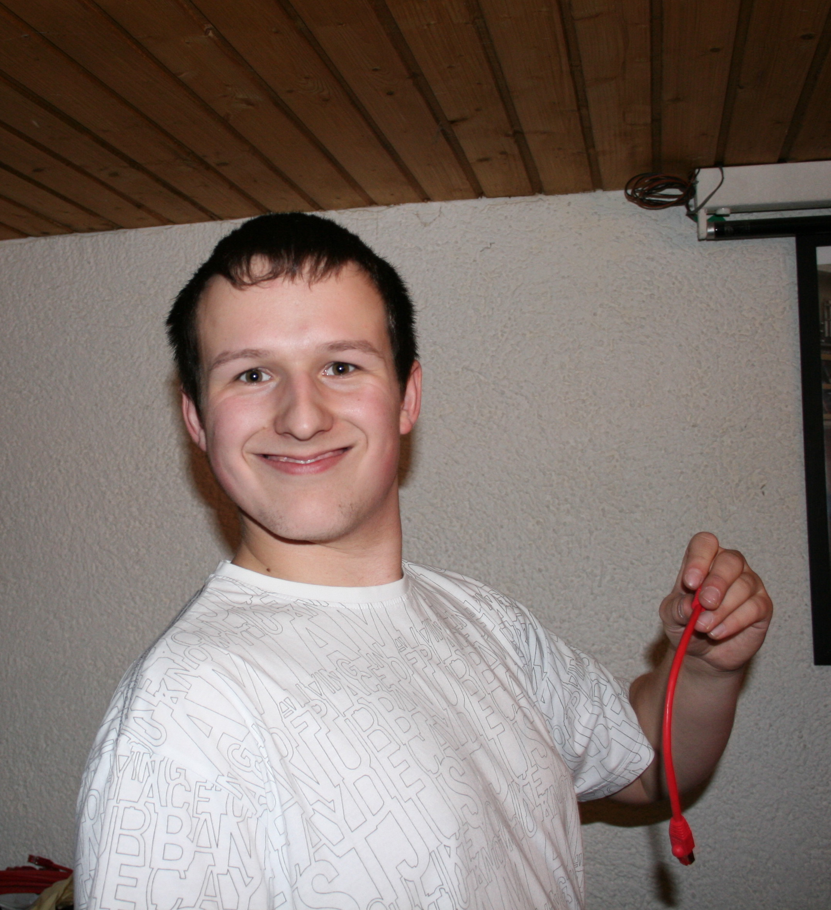

class: center, middle, inverseold # Vox Pupuli<br> ## Hinter jedem erfolgreichen Open Source Projekt steht<br><br> eine lebhafte Community --- ## $ whoami  * Tim 'bastelfreak' Meusel * Bei [Vox Pupuli](https://voxpupuli.org/) aktiv seit 2015 * Für einen sehr kleinen lokalen Hoster gearbeitet * Vox Pupuli (PMC) * Wohnhaft in ~~Köln~~ -> Koblenz * Senior IT Automation Consultant für [betadots](https://betadots.de/) <a href='https://betadots.de' alt='company website betadots'><img src="logo-1181x1181.png" alt="drawing" style="position: fixed; bottom: 12px; left: 20px; width: 100px;"/></a> ??? * Wer kennt das Bild von GitHub? * Foto wird 16 Jahre alt im September --- class: center, middle, inverse # Was ist<br/> Puppet? ??? * Wer war in meinem Vortrag letztes Jahr? * Wer kennt Puppet? --- .left-column[ ## Puppet ### Was? ] .right-column[ * Infrastructure as Code (IaC) Software ] <a href='https://betadots.de' alt='company website betadots'><img src="logo-1181x1181.png" alt="drawing" style="position: fixed; bottom: 12px; left: 20px; width: 100px;"/></a> .footnote[[bastelfreak](https://github.com/bastelfreak) für [Vox Pupuli]((https://voxpupuli.org)] ??? --- count: false .left-column[ ## Puppet ### Was? ] .right-column[ * Infrastructure as Code (IaC) Software * Eigene deklarative Sprache, Puppet DSL ] <a href='https://betadots.de' alt='company website betadots'><img src="logo-1181x1181.png" alt="drawing" style="position: fixed; bottom: 12px; left: 20px; width: 100px;"/></a> .footnote[[bastelfreak](https://github.com/bastelfreak) für [Vox Pupuli]((https://voxpupuli.org)] ??? * Alternatives like Salt/Ansible don't, they are mostly YAML --- count: false .left-column[ ## Puppet ### Was? ] .right-column[ * Infrastructure as Code (IaC) Software * Eigene deklarative Sprache, Puppet DSL * Erfunden/entwickelt von Puppet Inc (jetzt Perforce) ] <a href='https://betadots.de' alt='company website betadots'><img src="logo-1181x1181.png" alt="drawing" style="position: fixed; bottom: 12px; left: 20px; width: 100px;"/></a> .footnote[[bastelfreak](https://github.com/bastelfreak) für [Vox Pupuli]((https://voxpupuli.org)] ??? --- count: false .left-column[ ## Puppet ### Was? ] .right-column[ * Infrastructure as Code (IaC) Software * Eigene deklarative Sprache, Puppet DSL * Erfunden/entwickelt von Puppet Inc (jetzt Perforce) * Apache 2 Lizenz mit CLA, bis November 2025 ] <a href='https://betadots.de' alt='company website betadots'><img src="logo-1181x1181.png" alt="drawing" style="position: fixed; bottom: 12px; left: 20px; width: 100px;"/></a> .footnote[[bastelfreak](https://github.com/bastelfreak) für [Vox Pupuli]((https://voxpupuli.org)] ??? --- .left-column[ ## Puppet ### Was? ### Wie? ] .right-column[ Beispiel Klasse für nginx ```puppet \# @summary configures nginx in a bad way \# @param content the whole nginx config class nginx ( Sensitive[String[1]] $content, ) { package { 'nginx': ensure => 'installed', } -> file { '/etc/nginx/nginx.conf': ensure => 'file', content => $content, } ~> service { 'nginx': ensure => 'running', enable => true, } } ``` ] <a href='https://betadots.de' alt='company website betadots'><img src="logo-1181x1181.png" alt="drawing" style="position: fixed; bottom: 12px; left: 20px; width: 100px;"/></a> .footnote[[bastelfreak](https://github.com/bastelfreak) für [Vox Pupuli]((https://voxpupuli.org)] ??? * example class of three resources. A resources describes one specific thing on a system --- .left-column[ ## Puppet ### Was? ### Wie? ] .right-column[ * Ein oder mehrere Klassen bilden ein Puppet Modul * glorifiziertes .tar.gz Archiv * Ähnlich eines Ruby Gems oder Python Paketes ] <a href='https://betadots.de' alt='company website betadots'><img src="logo-1181x1181.png" alt="drawing" style="position: fixed; bottom: 12px; left: 20px; width: 100px;"/></a> .footnote[[bastelfreak](https://github.com/bastelfreak) für [Vox Pupuli]((https://voxpupuli.org)] ??? --- count: false .left-column[ ## Puppet ### Was? ### Wie? ] .right-column[ * Ein oder mehrere Klassen bilden ein Puppet Modul * glorifiziertes .tar.gz Archiv * Ähnlich eines Ruby Gems oder Python Paketes * Meistens lebt ein Modul in einem Git(Hub) Repo * Ein Modul verwaltet eine Software Komponente ] <a href='https://betadots.de' alt='company website betadots'><img src="logo-1181x1181.png" alt="drawing" style="position: fixed; bottom: 12px; left: 20px; width: 100px;"/></a> .footnote[[bastelfreak](https://github.com/bastelfreak) für [Vox Pupuli]((https://voxpupuli.org)] ??? * grouping resources based on software component makes modules exchangeable and composable! --- class: center, middle, inverse # Wer benutzt<br> Open Source Software? ??? * easy question as a warm up --- class: center, middle, inverse # Wer wollte einen<br> Bug reporten? ??? * Among this group, who wanted to report a bug or provide a patch? --- class: center, middle, inverse # Wer nutzt tote<br> Open Source Software? ??? * Wer hat während des bugreports gemerkt dass das projekt nur einer person gehört die seit 3 jahren nichts mehr daran gemacht hat? You might guess where this is going --- class: center, middle, inverse # Was ist dieses<br/> Vox Pupuli Ding? ??? Now a question I will try to answer for you, what is vox pupuli * Who heard about it before? --- .left-column[ ## Vox Pupuli ### Was? ] .right-column[ * Entwicklung vieler Puppet Module ] <a href='https://betadots.de' alt='company website betadots'><img src="logo-1181x1181.png" alt="drawing" style="position: fixed; bottom: 12px; left: 20px; width: 100px;"/></a> .footnote[[bastelfreak](https://github.com/bastelfreak) für [Vox Pupuli]((https://voxpupuli.org)] ??? Some stats. A group that: * 150 Puppet modules in 2021. 190 *active* modules at the moment --- count: false .left-column[ ## Vox Pupuli ### Was? ] .right-column[ * Entwicklung vieler Puppet Module * Und Ruby Gems! ] <a href='https://betadots.de' alt='company website betadots'><img src="logo-1181x1181.png" alt="drawing" style="position: fixed; bottom: 12px; left: 20px; width: 100px;"/></a> .footnote[[bastelfreak](https://github.com/bastelfreak) für [Vox Pupuli]((https://voxpupuli.org)] ??? * 43 Ruby Gems in 2021, 54 *active* gems at the moment --- count: false .left-column[ ## Vox Pupuli ### Was? ] .right-column[ * Entwicklung vieler Puppet Module * Und Ruby Gems! * Freundliche und hilfsbereite Community ] <a href='https://betadots.de' alt='company website betadots'><img src="logo-1181x1181.png" alt="drawing" style="position: fixed; bottom: 12px; left: 20px; width: 100px;"/></a> .footnote[[bastelfreak](https://github.com/bastelfreak) für [Vox Pupuli]((https://voxpupuli.org)] ??? * We've a code of conduct at least since 2016 and had a single violation * A person wasn't polite to a few others --- count: false .left-column[ ## Vox Pupuli ### Was? ] .right-column[ * Entwicklung vieler Puppet Module * Und Ruby Gems! * Freundliche und hilfsbereite Community * Aufgeschlossen für neue Mitglieder und Technologien ] <a href='https://betadots.de' alt='company website betadots'><img src="logo-1181x1181.png" alt="drawing" style="position: fixed; bottom: 12px; left: 20px; width: 100px;"/></a> .footnote[[bastelfreak](https://github.com/bastelfreak) für [Vox Pupuli]((https://voxpupuli.org)] ??? * new people are always welcome and it's easy to participate * usually interact via IRC or via GitHub issues and pull requests * Puppet/Perforce has a slack community. Our slack room is bridged with our IRC channel * technology: example conversation: Hey can I add gentoo support to a module? Or Arch Linux support? * domain specific experts * Any fellow Arch Linux friends here? --- count: false .left-column[ ## Vox Pupuli ### Was? ] .right-column[ * Entwicklung vieler Puppet Module * Und Ruby Gems! * Freundliche und hilfsbereite Community * Aufgeschlossen für neue Mitglieder und Technologien * Ein Zuhause für verwaiste Puppet-Module ] <a href='https://betadots.de' alt='company website betadots'><img src="logo-1181x1181.png" alt="drawing" style="position: fixed; bottom: 12px; left: 20px; width: 100px;"/></a> .footnote[[bastelfreak](https://github.com/bastelfreak) für [Vox Pupuli]((https://voxpupuli.org)] ??? --- count: false .left-column[ ## Vox Pupuli ### Was? ] .right-column[ * Entwicklung vieler Puppet Module * Und Ruby Gems! * Freundliche und hilfsbereite Community * Aufgeschlossen für neue Mitglieder und Technologien * Ein Zuhause für verwaiste Puppet-Module * Ein Kollektiv aus einzelnen Entwicklern aufbauen ] <a href='https://betadots.de' alt='company website betadots'><img src="logo-1181x1181.png" alt="drawing" style="position: fixed; bottom: 12px; left: 20px; width: 100px;"/></a> .footnote[[bastelfreak](https://github.com/bastelfreak) für [Vox Pupuli]((https://voxpupuli.org)] ??? --- count: false .left-column[ ## Vox Pupuli ### Was? ] .right-column[ * Entwicklung vieler Puppet Module * Und Ruby Gems! * Freundliche und hilfsbereite Community * Aufgeschlossen für neue Mitglieder und Technologien * Ein Zuhause für verwaiste Puppet-Module * Ein Kollektiv aus einzelnen Entwicklern aufbauen * Sicherstellung einer kontinuierlichen Weiterentwicklung ] <a href='https://betadots.de' alt='company website betadots'><img src="logo-1181x1181.png" alt="drawing" style="position: fixed; bottom: 12px; left: 20px; width: 100px;"/></a> .footnote[[bastelfreak](https://github.com/bastelfreak) für [Vox Pupuli]((https://voxpupuli.org)] ??? * We want to work together on modules * together we develop tooling to test our modules --- .left-column[ ## Vox Pupuli ### Was? ### Wer? ] .right-column[ * Vox Pupuli Mitglieder in der GitHub Org  ] <a href='https://betadots.de' alt='company website betadots'><img src="logo-1181x1181.png" alt="drawing" style="position: fixed; bottom: 12px; left: 20px; width: 100px;"/></a> .footnote[[bastelfreak](https://github.com/bastelfreak) für [Vox Pupuli]((https://voxpupuli.org)] ??? * 2021: 161 members in the GitHub org with merge access * now: 213 * every dot marks a presentation about or related to vox pupuli * break even point erreicht? macht jetzt jeder cloud und terraform? oder serverless? oder nocode --- .left-column[ ## Vox Pupuli ### Was? ### Wer? ] .right-column[ * Viele Git Neulinge * `git rebase` ist für viele eine Herausforderung ] <a href='https://betadots.de' alt='company website betadots'><img src="logo-1181x1181.png" alt="drawing" style="position: fixed; bottom: 12px; left: 20px; width: 100px;"/></a> .footnote[[bastelfreak](https://github.com/bastelfreak) für [Vox Pupuli]((https://voxpupuli.org)] ??? --- count: false .left-column[ ## Vox Pupuli ### Was? ### Wer? ] .right-column[ * Viele Git Neulinge * `git rebase` ist für viele eine Herausforderung * Viele Menschen ohne Erfahrung mit Test Frameworks * Interesse an RuboCop/puppet-lint/rspec-puppet/serverspec ] <a href='https://betadots.de' alt='company website betadots'><img src="logo-1181x1181.png" alt="drawing" style="position: fixed; bottom: 12px; left: 20px; width: 100px;"/></a> .footnote[[bastelfreak](https://github.com/bastelfreak) für [Vox Pupuli]((https://voxpupuli.org)] ??? * Those are the tools we use in our CI * talk about them later * CI runs automatically * CI does code annotations * People want to fix/enhance their code because CI feedback is quick and nice --- count: false .left-column[ ## Vox Pupuli ### Was? ### Wer? ] .right-column[ * Viele Git Neulinge * `git rebase` ist für viele eine Herausforderung * Viele Menschen ohne Erfahrung mit Test Frameworks * Interesse an RuboCop/puppet-lint/rspec-puppet/serverspec * SRE/DevOps/Platform/Systems Engineers in kleinen Teams * Nutzen Puppet im Betrieb und wollen öffentlichen Module nutzen ] <a href='https://betadots.de' alt='company website betadots'><img src="logo-1181x1181.png" alt="drawing" style="position: fixed; bottom: 12px; left: 20px; width: 100px;"/></a> .footnote[[bastelfreak](https://github.com/bastelfreak) für [Vox Pupuli]((https://voxpupuli.org)] ??? * a team so tiny, often a single person --- count: false .left-column[ ## Vox Pupuli ### Was? ### Wer? ] .right-column[ * Viele Git Neulinge * `git rebase` ist für viele eine Herausforderung * Viele Menschen ohne Erfahrung mit Test Frameworks * Interesse an RuboCop/puppet-lint/rspec-puppet/serverspec * SRE/DevOps/Platform/Systems Engineers in kleinen Teams * Nutzen Puppet im Betrieb und wollen öffentlichen Module nutzen * Puppet Consultants patchen Module für Kunden ] <a href='https://betadots.de' alt='company website betadots'><img src="logo-1181x1181.png" alt="drawing" style="position: fixed; bottom: 12px; left: 20px; width: 100px;"/></a> .footnote[[bastelfreak](https://github.com/bastelfreak) für [Vox Pupuli]((https://voxpupuli.org)] ??? * We provide letter of recognitions or kinda an employment reference * fryher viele admins von legacy infra --- .left-column[ ## Vox Pupuli ### Was? ### Wer? ### Wieso? ] .right-column[ * (Erfolgreiche) FOSS Projekte alleine maintainen ist schwer ] <a href='https://betadots.de' alt='company website betadots'><img src="logo-1181x1181.png" alt="drawing" style="position: fixed; bottom: 12px; left: 20px; width: 100px;"/></a> .footnote[[bastelfreak](https://github.com/bastelfreak) für [Vox Pupuli]((https://voxpupuli.org)] ??? * Who of you maintains a open source project --- count: false .left-column[ ## Vox Pupuli ### Was? ### Wer? ### Wieso? ] .right-column[ * (Erfolgreiche) FOSS Projekte alleine maintainen ist schwer * Erfolgreich impliziert Dokumentation ] <a href='https://betadots.de' alt='company website betadots'><img src="logo-1181x1181.png" alt="drawing" style="position: fixed; bottom: 12px; left: 20px; width: 100px;"/></a> .footnote[[bastelfreak](https://github.com/bastelfreak) für [Vox Pupuli]((https://voxpupuli.org)] --- count: false .left-column[ ## Vox Pupuli ### Was? ### Wer? ### Wieso? ] .right-column[ * (Erfolgreiche) FOSS Projekte alleine maintainen ist schwer * Erfolgreich impliziert Dokumentation * Mehr User → Mehr Bugreports and Feature Requests ] <a href='https://betadots.de' alt='company website betadots'><img src="logo-1181x1181.png" alt="drawing" style="position: fixed; bottom: 12px; left: 20px; width: 100px;"/></a> .footnote[[bastelfreak](https://github.com/bastelfreak) für [Vox Pupuli]((https://voxpupuli.org)] ??? --- count: false .left-column[ ## Vox Pupuli ### Was? ### Wer? ### Wieso? ] .right-column[ * (Erfolgreiche) FOSS Projekte alleine maintainen ist schwer * Erfolgreich impliziert Dokumentation * Mehr User → Mehr Bugreports and Feature Requests * Maintainer verlieren Interesse, fehlende Zeit, Burnout ] <a href='https://betadots.de' alt='company website betadots'><img src="logo-1181x1181.png" alt="drawing" style="position: fixed; bottom: 12px; left: 20px; width: 100px;"/></a> .footnote[[bastelfreak](https://github.com/bastelfreak) für [Vox Pupuli]((https://voxpupuli.org)] ??? * if a single person maintains a project: the more users you have the more likely it is to burn out * remember earlier when I asked about abandoned software? --- count: false .left-column[ ## Vox Pupuli ### Was? ### Wer? ### Wieso? ] .right-column[ * (Erfolgreiche) FOSS Projekte alleine maintainen ist schwer * Erfolgreich impliziert Dokumentation * Mehr User → Mehr Bugreports and Feature Requests * Maintainer verlieren Interesse, fehlende Zeit, Burnout * Vox Pupuli möchte dem Vorbeugen * Mit einer großen Gruppe an Maintainern und effizientes Tooling ] <a href='https://betadots.de' alt='company website betadots'><img src="logo-1181x1181.png" alt="drawing" style="position: fixed; bottom: 12px; left: 20px; width: 100px;"/></a> .footnote[[bastelfreak](https://github.com/bastelfreak) für [Vox Pupuli]((https://voxpupuli.org)] ??? * if a single person maintains a project: the more users you have the more likely it is to burn out * remember earlier when I asked about abandoned software? --- .left-column[ ## Vox Pupuli ### Was? ### Wer? ### Zusammenfassung! ] .right-column[ * Vox Pupuli stellt einen Großteil der meist genutzten Module * Perforce hat 162 "öffentliche" Module, Vox Pupuli 194 * Vox Pupuli verwaltet 95% Tools zum testen und veröffentlichen von Modulen * Vox Pupuli verbindet Domain Experts, Entwickler und User ] ??? --- count: false .left-column[ ## Vox Pupuli ### Was? ### Wer? ### Zusammenfassung! ] .right-column[ * Vox Pupuli stellt einen Großteil der meist genutzten Module * Perforce hat 162 "öffentliche" Module, Vox Pupuli 194 * Vox Pupuli verwaltet 95% Tools zum testen und veröffentlichen von Modulen * Vox Pupuli verbindet Domain Experts, Entwickler und User * Vox Pupuli ist die Grundlage für den kommerziellen Erfolg von Perforce ] ??? * Perforce hat ein kommerzielles Produkt, PE --- class: center, middle, inverse ## November 2024 -<br><br> Perforce bricht mit der Community --- .left-column[ ## Perforce ### Was? ] .right-column[ * Perforce baut keine Open Source Pakete mehr für Puppet Agent/Server/DB * Zukünftige Entwicklung soll in privaten Git Repos passieren ] <a href='https://betadots.de' alt='company website betadots'><img src="logo-1181x1181.png" alt="drawing" style="position: fixed; bottom: 12px; left: 20px; width: 100px;"/></a> .footnote[[bastelfreak](https://github.com/bastelfreak) für [Vox Pupuli]((https://voxpupuli.org)] ??? --- count: false .left-column[ ## Perforce ### Was? ] .right-column[ * Perforce baut keine Open Source Pakete mehr für Puppet Agent/Server/DB * Zukünftige Entwicklung soll in privaten Git Repos passieren * Es gibt eine "Developer EULA" um Zugriff auf die Pakete zu bekommen * Die EULA erlaubt die Nutzung der Pakete in "internen CI Systemen" ] <a href='https://betadots.de' alt='company website betadots'><img src="logo-1181x1181.png" alt="drawing" style="position: fixed; bottom: 12px; left: 20px; width: 100px;"/></a> .footnote[[bastelfreak](https://github.com/bastelfreak) für [Vox Pupuli]((https://voxpupuli.org)] ??? * Selbst wenn man als open source Freund noch Software von Perforce nutzen möchte, deren Lizenz ermöglicht es mir nicht. --- count: false .left-column[ ## Perforce ### Was? ] .right-column[ * Perforce baut keine Open Source Pakete mehr für Puppet Agent/Server/DB * Zukünftige Entwicklung soll in privaten Git Repos passieren * Es gibt eine "Developer EULA" um Zugriff auf die Pakete zu bekommen * Die EULA erlaubt die Nutzung der Pakete in "internen CI Systemen" * Es ist nicht mehr möglich Puppet Module öffentlich zu entwickeln und mit Perforce Quellen zu testen ] <a href='https://betadots.de' alt='company website betadots'><img src="logo-1181x1181.png" alt="drawing" style="position: fixed; bottom: 12px; left: 20px; width: 100px;"/></a> .footnote[[bastelfreak](https://github.com/bastelfreak) für [Vox Pupuli]((https://voxpupuli.org)] ??? --- .left-column[ ## Perforce ### Was? ### Wie (nicht)? ] .right-column[  ] <a href='https://betadots.de' alt='company website betadots'><img src="logo-1181x1181.png" alt="drawing" style="position: fixed; bottom: 12px; left: 20px; width: 100px;"/></a> .footnote[[bastelfreak](https://github.com/bastelfreak) für [Vox Pupuli]((https://voxpupuli.org)] ??? Paketbau bei Perforce * Es gibt ein git repository * Es hat öffentliche Tests * es gibt einen Jenkins. Dieser war bis 2016 öffentlich und jeder konnte gucken was der so macht * Jetzt führt er vielleicht weitere tests aus, weiß man nicht. * irgendwie werden da auch pakete gebaut * was in den paketen drinn ist, und ob es was mit dem eigentlichen git repo zutun hat, weiß keiner * Perforce war nicht interessiert daran die pipelines von jenkins zu github zu migrieren/öffentlich zu machen * PRs wurden ignoriert * wer meint denn so ein setup ist sinnvoll? --- .left-column[ ## Perforce ### Was? ### Wie (nicht)? ] .right-column[ Vox Pupuli Tools, welche von Perforce verkauft werden: * Alle wichtigen [puppet-lint plugins](https://rubygems.org/gems/voxpupuli-puppet-lint-plugins) (PDK) * [FacterDB](https://github.com/voxpupuli/facterdb) (PDK) * [metadata-json-lint](https://github.com/voxpupuli/metadata-json-lint) (PDK) * [json-schema](https://github.com/voxpupuli/json-schema) (PDK) * [rspec-puppet-facts](https://github.com/voxpupuli/rspec-puppet-facts) (PDK) * [puppet-blacksmith](https://github.com/voxpupuli/puppet-blacksmith) (PDK) * [puppet-syntax](https://github.com/voxpupuli/puppet-syntax) (puppet-dev-tools container) * [ra10ke](https://github.com/voxpupuli/ra10ke) (puppet-dev-tools container) * [onceover](https://github.com/voxpupuli/onceover) (puppet-dev-tools container) * [Beaker](https://github.com/voxpupuli/beaker) (Perforce intern genutzt) * [hiera-eyaml](https://github.com/voxpupuli/hiera-eyaml/) (PE und puppet-dev-tools container) ] <a href='https://betadots.de' alt='company website betadots'><img src="logo-1181x1181.png" alt="drawing" style="position: fixed; bottom: 12px; left: 20px; width: 100px;"/></a> .footnote[[bastelfreak](https://github.com/bastelfreak) für [Vox Pupuli]((https://voxpupuli.org)] ??? * das ist der komplette Stack um seine module zu testen. Statische Code analyse mit syntax checks und linting, unit tests, acceptance tests * Wie viel geld oder unterstützung bekommt die community von Perforce? --- .left-column[ ## OpenVox ### Was? ] .right-column[ * Vox Pupuli startet das OpenVoxProject * Neue GitHub Organisation * Macht es später einfacher falls ein Teil des Projekts zur LF oder ähnliches wechseln soll * OpenVoxProject = Weiterentwicklung der Open Source versionen von Puppet Agent/Server/DB * Vox Pupuli = Puppet Module + Tooling ] <a href='https://betadots.de' alt='company website betadots'><img src="logo-1181x1181.png" alt="drawing" style="position: fixed; bottom: 12px; left: 20px; width: 100px;"/></a> .footnote[[bastelfreak](https://github.com/bastelfreak) für [Vox Pupuli]((https://voxpupuli.org)] ??? * what else do people love about vox pupuli? Our styleguide * We are distributed around the world * From the beginning, we were in different timezones and people with different backgrounds --- count: false .left-column[ ## Vox Pupuli ### Was? ### Wer? ### Wieso? ### Wie? ] .right-column[ * Style Guide & Best Practices sind wichtig! * Dokumentiert jede Diskussion und deren Ergebnis! ] <a href='https://betadots.de' alt='company website betadots'><img src="logo-1181x1181.png" alt="drawing" style="position: fixed; bottom: 12px; left: 20px; width: 100px;"/></a> .footnote[[bastelfreak](https://github.com/bastelfreak) für [Vox Pupuli]((https://voxpupuli.org)] ??? * Often it's possible to implement something in different ways * Or to format the code in different ways * we notice this during code reviews, we use PRs for every change/contribution * if something is unclear, we talk about it and document it afterwards --- count: false .left-column[ ## Vox Pupuli ### Was? ### Wer? ### Wieso? ### Wie? ] .right-column[ * Style Guide & Best Practices sind wichtig! * Dokumentiert jede Diskussion und deren Ergebnis! * Es ist Okay Entscheidungen Rückgängig zu machen ] <a href='https://betadots.de' alt='company website betadots'><img src="logo-1181x1181.png" alt="drawing" style="position: fixed; bottom: 12px; left: 20px; width: 100px;"/></a> .footnote[[bastelfreak](https://github.com/bastelfreak) für [Vox Pupuli]((https://voxpupuli.org)] ??? * This is a living document. new collaborators should read it. those people are awesome to spot (my) spelling issues, enhancements, stuff that doesnt make sense * review it for each new puppet version --- count: false .left-column[ ## Vox Pupuli ### Was? ### Wer? ### Wieso? ### Wie? ] .right-column[ * Style Guide & Best Practices sind wichtig! * Dokumentiert jede Diskussion und deren Ergebnis! * Es ist Okay Entscheidungen Rückgängig zu machen * Vox Pupuli Styleguide: [voxpupuli.org/docs/reviewing_pr](https://voxpupuli.org/docs/reviewing_pr/) ] <a href='https://betadots.de' alt='company website betadots'><img src="logo-1181x1181.png" alt="drawing" style="position: fixed; bottom: 12px; left: 20px; width: 100px;"/></a> .footnote[[bastelfreak](https://github.com/bastelfreak) für [Vox Pupuli]((https://voxpupuli.org)] ??? * If you've a development team within your company, I recommend following this pattern * Write down your guidelines, publish them on the internet, interact with others --- count: false .left-column[ ## Vox Pupuli ### Was? ### Wer? ### Wieso? ### Wie? ] .right-column[ * Style Guide & Best Practices sind wichtig! * Dokumentiert jede Diskussion und deren Ergebnis! * Es ist Okay Entscheidungen Rückgängig zu machen * Vox Pupuli Styleguide: [voxpupuli.org/docs/reviewing_pr](https://voxpupuli.org/docs/reviewing_pr/) * Unser Styleguide wurde von Puppet Inc adoptiert * Er ist der Quasistandard im Puppet Ökosystem ] <a href='https://betadots.de' alt='company website betadots'><img src="logo-1181x1181.png" alt="drawing" style="position: fixed; bottom: 12px; left: 20px; width: 100px;"/></a> .footnote[[bastelfreak](https://github.com/bastelfreak) für [Vox Pupuli]((https://voxpupuli.org)] ??? * code best practice and style guide * Puppet/Perforce also has a styleguide, but it's lacking many details. Ours is an enhancement or addition --- count: false .left-column[ ## Vox Pupuli ### Was? ### Wer? ### Wieso? ### Wie? ] .right-column[ * Style Guide & Best Practices sind wichtig! * Dokumentiert jede Diskussion und deren Ergebnis! * Es ist Okay Entscheidungen Rückgängig zu machen * Vox Pupuli Styleguide: [voxpupuli.org/docs/reviewing_pr](https://voxpupuli.org/docs/reviewing_pr/) * Unser Styleguide wurde von Puppet Inc adoptiert * Er ist der Quasistandard im Puppet Ökosystem * Styleguides bringen einen Mehrwert wenn man ihn erzwingen kann ] <a href='https://betadots.de' alt='company website betadots'><img src="logo-1181x1181.png" alt="drawing" style="position: fixed; bottom: 12px; left: 20px; width: 100px;"/></a> .footnote[[bastelfreak](https://github.com/bastelfreak) für [Vox Pupuli]((https://voxpupuli.org)] ??? * Wouldnt it be nice if we could enforce this somehow? if we could verify if our code looks like the styleguide recommends it? --- count: false .left-column[ ## Vox Pupuli ### Was? ### Wer? ### Wieso? ### Wie? ] .right-column[ * Style Guide & Best Practices sind wichtig! * Dokumentiert jede Diskussion und deren Ergebnis! * Es ist Okay Entscheidungen Rückgängig zu machen * Vox Pupuli Styleguide: [voxpupuli.org/docs/reviewing_pr](https://voxpupuli.org/docs/reviewing_pr/) * Unser Styleguide wurde von Puppet Inc adoptiert * Er ist der Quasistandard im Puppet Ökosystem * Styleguides bringen einen Mehrwert wenn man ihn erzwingen kann * puppet-lint, RuboCop, metadata-json-lint ] <a href='https://betadots.de' alt='company website betadots'><img src="logo-1181x1181.png" alt="drawing" style="position: fixed; bottom: 12px; left: 20px; width: 100px;"/></a> .footnote[[bastelfreak](https://github.com/bastelfreak) für [Vox Pupuli]((https://voxpupuli.org)] ??? * linters! * metadata-json-lint for json, RuboCop for ruby files, puppet-lint for puppet DSL * puppet-lint can be extended with plugins. one plugin for each specific entry in the styleguide * this makes reviews easier. as a contributor, you don't need to wait for feedback from us. there are tools that can tell you what's wrong. and in most cases how to fix it (autofix). People love that. --- .left-column[ ## Vox Pupuli ### Was? ### Wer? ### Wieso? ### Wie? ] .right-column[ * CI Systeme sind wichtig! * Schnelles Feedback, weniger Aufwand für Reviewer ] <a href='https://betadots.de' alt='company website betadots'><img src="logo-1181x1181.png" alt="drawing" style="position: fixed; bottom: 12px; left: 20px; width: 100px;"/></a> .footnote[[bastelfreak](https://github.com/bastelfreak) für [Vox Pupuli]((https://voxpupuli.org)] ??? * I still fix bugs in other projects and notice that they don't have any tests or linting --- count: false .left-column[ ## Vox Pupuli ### Was? ### Wer? ### Wieso? ### Wie? ] .right-column[ * CI Systeme sind wichtig! * Schnelles Feedback, weniger Aufwand für Reviewer * Code Annotations! ] <a href='https://betadots.de' alt='company website betadots'><img src="logo-1181x1181.png" alt="drawing" style="position: fixed; bottom: 12px; left: 20px; width: 100px;"/></a> .footnote[[bastelfreak](https://github.com/bastelfreak) für [Vox Pupuli]((https://voxpupuli.org)] ??? * GitHub and GitLab support this. A linting/test tool can tell the CI system which line, which character violated a styleguide or broke a test --- .left-column[ ## Vox Pupuli ### Was? ### Wer? ### Wieso? ### Wie? ] .right-column[ * Code Annotations (RuboCop)!  ] <a href='https://betadots.de' alt='company website betadots'><img src="logo-1181x1181.png" alt="drawing" style="position: fixed; bottom: 12px; left: 20px; width: 100px;"/></a> .footnote[[bastelfreak](https://github.com/bastelfreak) für [Vox Pupuli]((https://voxpupuli.org)] ??? * example for RuboCop. tells you the line, what kind of violation and a link to documentation * turns out people love that! * this enables people to work on their own most of the time, with a very short feedback loop --- .left-column[ ## Vox Pupuli ### Was? ### Wer? ### Wieso? ### Wie? ] .right-column[ * Code Annotations (RuboCop, puppet-lint)!  * Dokumentation für: Puppet Module [puppetmodule.info](https://puppetmodule.info/modules) ] <a href='https://betadots.de' alt='company website betadots'><img src="logo-1181x1181.png" alt="drawing" style="position: fixed; bottom: 12px; left: 20px; width: 100px;"/></a> .footnote[[bastelfreak](https://github.com/bastelfreak) für [Vox Pupuli]((https://voxpupuli.org)] ??? * we have the same feature for puppet-lint * what does it say? missing docs? * Remember when I earlier talked about documentation in a project? * In the puppet ecosystem you can add some inline comments and a tool called puppet-strings can generate documentation * We check during each CI run if the REFERENCE.md is up2date * many languages support it to generate documentation from code+inline docs. if yours does it, use it! * puppet forge will display the REFERENCE.md for each release * puppetmodule.info --- .left-column[ ## Vox Pupuli ### Was? ### Wer? ### Wieso? ### Wie? ] .right-column[ * Code Annotations (RuboCop, puppet-lint, rspec-puppet)!  ] <a href='https://betadots.de' alt='company website betadots'><img src="logo-1181x1181.png" alt="drawing" style="position: fixed; bottom: 12px; left: 20px; width: 100px;"/></a> .footnote[[bastelfreak](https://github.com/bastelfreak) für [Vox Pupuli]((https://voxpupuli.org)] ??? * rspec-puppet is used for unit testing * note the operating system? keep that in mind? --- .left-column[ ## Vox Pupuli ### Was? ### Wer? ### Wieso? ### Wie? ] .right-column[ * Code Annotations (RuboCop, puppet-lint, rspec-puppet, Beaker)!  ] <a href='https://betadots.de' alt='company website betadots'><img src="logo-1181x1181.png" alt="drawing" style="position: fixed; bottom: 12px; left: 20px; width: 100px;"/></a> .footnote[[bastelfreak](https://github.com/bastelfreak) für [Vox Pupuli]((https://voxpupuli.org)] ??? * Beaker macht acceptance testing --- .left-column[ ## Vox Pupuli ### Was? ### Wer? ### Wieso? ### Wie? ] .right-column[ * CI Systeme sind wichtig! * CI Systeme sollten so schnell wie möglich Feedback geben ] <a href='https://betadots.de' alt='company website betadots'><img src="logo-1181x1181.png" alt="drawing" style="position: fixed; bottom: 12px; left: 20px; width: 100px;"/></a> .footnote[[bastelfreak](https://github.com/bastelfreak) für [Vox Pupuli]((https://voxpupuli.org)] ??? * who likes to wait 20 minutes for CI to get feedback? Only people that drink a lot of coffee and need a refill --- .left-column[ ## Vox Pupuli ### Was? ### Wer? ### Wieso? ### Wie? ] .right-column[ * CI Matrix Generator  ] <a href='https://betadots.de' alt='company website betadots'><img src="logo-1181x1181.png" alt="drawing" style="position: fixed; bottom: 12px; left: 20px; width: 100px;"/></a> .footnote[[bastelfreak](https://github.com/bastelfreak) für [Vox Pupuli]((https://voxpupuli.org)] ??? We implemented this in github actions. * we start from quick checks to slower checks * first validate the code. puppet code, ruby code, if the syntax is valid * the linting and formatting. that's RuboCop/puppet-lint mentioned earlier * then we generate a CI matrix --- .left-column[ ## Vox Pupuli ### Was? ### Wer? ### Wieso? ### Wie? ] .right-column[ * CI Matrix Generator * `jq .requirements[0] metadata.json` ```json { "name": "puppet", "version_requirement": ">= 7.0.0 < 9.0.0" } ``` ] <a href='https://betadots.de' alt='company website betadots'><img src="logo-1181x1181.png" alt="drawing" style="position: fixed; bottom: 12px; left: 20px; width: 100px;"/></a> .footnote[[bastelfreak](https://github.com/bastelfreak) für [Vox Pupuli]((https://voxpupuli.org)] ??? * each puppet module contains a metadata.json * it lists the supported puppet versions * we get each major version and can generate CI jobs for each major version * makes implementing support for newer versions easy. bump metadata.json and watch CI * same pattern works in other languages, like python or ruby projects * dont hardcode this in your CI config. --- count: false .left-column[ ## Vox Pupuli ### Was? ### Wer? ### Wieso? ### Wie? ] .right-column[ * CI Matrix Generator * `jq .requirements[0] metadata.json` ```json { "name": "puppet", "version_requirement": ">= 7.0.0 < 9.0.0" } ``` * `jq .operatingsystem_support[0] metadata.json` ```json { "operatingsystem": "Debian", "operatingsystemrelease": [ "11", "12" ] } ``` ] <a href='https://betadots.de' alt='company website betadots'><img src="logo-1181x1181.png" alt="drawing" style="position: fixed; bottom: 12px; left: 20px; width: 100px;"/></a> .footnote[[bastelfreak](https://github.com/bastelfreak) für [Vox Pupuli]((https://voxpupuli.org)] ??? * We have a tool called beaker to spin up VMs/docker instances * generate one job per OS version per puppet version * remember earlier when we talked about being open to new technology? someone wanting to add support for a new operating system? add it to metadata.json and you get a new CI job --- .left-column[ ## Vox Pupuli ### Was? ### Wer? ### Wieso? ### Wie? ] .right-column[ * CI Matrix Generator * Doku: [github.com/voxpupuli/gha-puppet](https://github.com/voxpupuli/gha-puppet#puppet-github-actions) ] <a href='https://betadots.de' alt='company website betadots'><img src="logo-1181x1181.png" alt="drawing" style="position: fixed; bottom: 12px; left: 20px; width: 100px;"/></a> .footnote[[bastelfreak](https://github.com/bastelfreak) für [Vox Pupuli]((https://voxpupuli.org)] ??? As mentioned, documentation is important, the whole setup is FOSS and runs on GitHub actions, can be ported to gitlab --- count: false .left-column[ ## Vox Pupuli ### Was? ### Wer? ### Wieso? ### Wie? ] .right-column[ * CI Matrix Generator * Doku: [github.com/voxpupuli/gha-puppet](https://github.com/voxpupuli/gha-puppet#puppet-github-actions) * Wiederbenutzbarer GitHub Workflow ```yaml name: CI on: pull_request concurrency: group: ${{ github.ref_name }} cancel-in-progress: true jobs: puppet: name: Puppet uses: voxpupuli/gha-puppet/.github/workflows/beaker.yml@v3 ``` ] <a href='https://betadots.de' alt='company website betadots'><img src="logo-1181x1181.png" alt="drawing" style="position: fixed; bottom: 12px; left: 20px; width: 100px;"/></a> .footnote[[bastelfreak](https://github.com/bastelfreak) für [Vox Pupuli]((https://voxpupuli.org)] ??? just in case you develop modules on github, you can reuse our workflow --- .left-column[ ## Vox Pupuli ### Was? ### Wer? ### Wieso? ### Wie? ] .right-column[ * CI Matrix Generator * Doku: [github.com/voxpupuli/gha-puppet](https://github.com/voxpupuli/gha-puppet#puppet-github-actions) * Wiederbenutzbarer GitHub Workflow * Alle Checks und Tests können auch lokal ausgeführt werden [voxpupuli.org/docs/how_to_run_tests](https://voxpupuli.org/docs/how_to_run_tests/) ] <a href='https://betadots.de' alt='company website betadots'><img src="logo-1181x1181.png" alt="drawing" style="position: fixed; bottom: 12px; left: 20px; width: 100px;"/></a> .footnote[[bastelfreak](https://github.com/bastelfreak) für [Vox Pupuli]((https://voxpupuli.org)] --- count: false .left-column[ ## Vox Pupuli ### Was? ### Wer? ### Wieso? ### Wie? ] .right-column[ * CI Matrix Generator * Doku: [github.com/voxpupuli/gha-puppet](https://github.com/voxpupuli/gha-puppet#puppet-github-actions) * Wiederbenutzbarer GitHub Workflow * Alle Checks und Tests können auch lokal ausgeführt werden [voxpupuli.org/docs/how_to_run_tests](https://voxpupuli.org/docs/how_to_run_tests/) * Jedes Repository hat eine CONTRIBUTING.md ] <a href='https://betadots.de' alt='company website betadots'><img src="logo-1181x1181.png" alt="drawing" style="position: fixed; bottom: 12px; left: 20px; width: 100px;"/></a> .footnote[[bastelfreak](https://github.com/bastelfreak) für [Vox Pupuli]((https://voxpupuli.org)] ??? Thats a github feature. when you open a PR and the file is present, github will tell you about it --- .left-column[ ## Vox Pupuli ### Was? ### Wer? ### Wieso? ### Wie? ] .right-column[ * Jedes Projekt hat Boilerplate Dateien * Rakefile, Verzeichnissstruktur, CONTRIBUTING.md ] <a href='https://betadots.de' alt='company website betadots'><img src="logo-1181x1181.png" alt="drawing" style="position: fixed; bottom: 12px; left: 20px; width: 100px;"/></a> .footnote[[bastelfreak](https://github.com/bastelfreak) für [Vox Pupuli]((https://voxpupuli.org)] --- count: false .left-column[ ## Vox Pupuli ### Was? ### Wer? ### Wieso? ### Wie? ] .right-column[ * Jedes Projekt hat Boilerplate Dateien * Rakefile, Verzeichnissstruktur, CONTRIBUTING.md * `modulesync`; Open Source Projekt von Vox Pupuli * Templates + Konfigurationsdateien auf eine Liste von Git Repositorys anwenden * Quellcode: [github.com/voxpupuli/modulesync](https://github.com/voxpupuli/modulesync#modulesync) ] <a href='https://betadots.de' alt='company website betadots'><img src="logo-1181x1181.png" alt="drawing" style="position: fixed; bottom: 12px; left: 20px; width: 100px;"/></a> .footnote[[bastelfreak](https://github.com/bastelfreak) für [Vox Pupuli]((https://voxpupuli.org)] ??? * this is not puppet-specific, it can be used for every group of git repos with similar boilerplate code * it can automatically create GitLab/GitHub/GitHub Enterprise PRs, or just push branches * distributed as ruby gem --- count: false .left-column[ ## Vox Pupuli ### Was? ### Wer? ### Wieso? ### Wie? ] .right-column[ * modulesync Configs: [github.com/voxpupuli/modulesync_config](https://github.com/voxpupuli/modulesync_config#modulesync-configs)  ] <a href='https://betadots.de' alt='company website betadots'><img src="logo-1181x1181.png" alt="drawing" style="position: fixed; bottom: 12px; left: 20px; width: 100px;"/></a> .footnote[[bastelfreak](https://github.com/bastelfreak) für [Vox Pupuli]((https://voxpupuli.org)] ??? --- class: center, middle, inverse # Fazit &<br/> Zusammenfassung --- .left-column[ ## Vox Pupuli ### Fazit ] .right-column[ * Dokumentiert wie euer Team arbeitet ] <a href='https://betadots.de' alt='company website betadots'><img src="logo-1181x1181.png" alt="drawing" style="position: fixed; bottom: 12px; left: 20px; width: 100px;"/></a> .footnote[[bastelfreak](https://github.com/bastelfreak) für [Vox Pupuli]((https://voxpupuli.org)] --- count: false .left-column[ ## Vox Pupuli ### Fazit ] .right-column[ * Dokumentiert wie euer Team arbeitet * Entwickelt öffentlich, auch Firmencode ] <a href='https://betadots.de' alt='company website betadots'><img src="logo-1181x1181.png" alt="drawing" style="position: fixed; bottom: 12px; left: 20px; width: 100px;"/></a> .footnote[[bastelfreak](https://github.com/bastelfreak) für [Vox Pupuli]((https://voxpupuli.org)] --- count: false .left-column[ ## Vox Pupuli ### Fazit ] .right-column[ * Dokumentiert wie euer Team arbeitet * Entwickelt öffentlich, auch Firmencode * Dokumentiert euren Styleguide ] <a href='https://betadots.de' alt='company website betadots'><img src="logo-1181x1181.png" alt="drawing" style="position: fixed; bottom: 12px; left: 20px; width: 100px;"/></a> .footnote[[bastelfreak](https://github.com/bastelfreak) für [Vox Pupuli]((https://voxpupuli.org)] ??? * habt überhaupt einen stylgeguide * dokumentiert warum ihr euch für style X entschieden habt * bleibt möglichst nah am upstream styleguide * dokumentiert wenn ihr davon abweicht --- count: false .left-column[ ## Vox Pupuli ### Fazit ] .right-column[ * Dokumentiert wie euer Team arbeitet * Entwickelt öffentlich, auch Firmencode * Dokumentiert euren Styleguide * Dokumentiert eure Projekte ] <a href='https://betadots.de' alt='company website betadots'><img src="logo-1181x1181.png" alt="drawing" style="position: fixed; bottom: 12px; left: 20px; width: 100px;"/></a> .footnote[[bastelfreak](https://github.com/bastelfreak) für [Vox Pupuli]((https://voxpupuli.org)] ??? * Ist die dokumentation gut genug das sich ein neuer mitarbeiter eigenständig einarbeiten kann? * Sind externe user, die nicht bei euch arbeiten, in der lage die doku zu finden und zu verstehen? --- count: false .left-column[ ## Vox Pupuli ### Fazit ] .right-column[ * Dokumentiert wie euer Team arbeitet * Entwickelt öffentlich, auch Firmencode * Dokumentiert euren Styleguide * Dokumentiert eure Projekte * Minimiert Boilerplate Code ] <a href='https://betadots.de' alt='company website betadots'><img src="logo-1181x1181.png" alt="drawing" style="position: fixed; bottom: 12px; left: 20px; width: 100px;"/></a> .footnote[[bastelfreak](https://github.com/bastelfreak) für [Vox Pupuli]((https://voxpupuli.org)] ??? --- count: false .left-column[ ## Vox Pupuli ### Fazit ] .right-column[ * Dokumentiert wie euer Team arbeitet * Entwickelt öffentlich, auch Firmencode * Dokumentiert euren Styleguide * Dokumentiert eure Projekte * Minimiert Boilerplate Code * Verwaltet Boilerplate Code zentral ] <a href='https://betadots.de' alt='company website betadots'><img src="logo-1181x1181.png" alt="drawing" style="position: fixed; bottom: 12px; left: 20px; width: 100px;"/></a> .footnote[[bastelfreak](https://github.com/bastelfreak) für [Vox Pupuli]((https://voxpupuli.org)] ??? --- .left-column[ ## Vox Pupuli ### Fazit ### Kontakt ] .right-column[ * IRC: [Libera.Chat/#voxpupuli](https://web.libera.chat/?#voxpupuli) * Mailingliste: [voxpupuli@groups.io](mailto:voxpupuli@groups.io) * Feedback: [tim@bastelfreak.de](mailto:tim@bastelfreak.de) * Slideset und weitere Vorträge: <a href='https://github.com/bastelfreak/talks'>github.com/bastelfreak/talks</a> * Support Vox Pupuli via [GitHub sponsors](https://github.com/sponsors/voxpupuli) oder [OpenCollective](https://opencollective.com/vox-pupuli/) ### Vielen Dank für eure Aufmerksamkeit! ] <a href='https://betadots.de' alt='company website betadots'><img src="logo-1181x1181.png" alt="drawing" style="position: fixed; bottom: 12px; left: 20px; width: 100px;"/></a> .footnote[[bastelfreak](https://github.com/bastelfreak) für [Vox Pupuli]((https://voxpupuli.org)] ??? * Danke betadots fürs sponsoring * wir stellen ein * supported vox pupuli --- .left-column[ ## Vox Pupuli ### Fazit ### Kontakt ### Link Sammlung ] .right-column[ * Unsere Website: [voxpupuli.org/docs/](https://voxpupuli.org/docs/) * CI Setup: [github.com/voxpupuli/gha-puppet](https://github.com/voxpupuli/gha-puppet#puppet-github-actions) * Unit Tests: [github.com/voxpupuli/voxpupuli-test](https://github.com/voxpupuli/voxpupuli-test#voxpupuli-test-gem) * Acceptance Tests: [github.com/voxpupuli/voxpupuli-acceptance](https://github.com/voxpupuli/voxpupuli-acceptance#voxpupuli-acceptance-gem) * Release Tooling: [github.com/voxpupuli/voxpupuli-release](https://github.com/voxpupuli/voxpupuli-release#vox-pupuli-release-gem) * modulesync_config: [github.com/voxpupuli/modulesync_config](https://github.com/voxpupuli/modulesync_config#modulesync-configs) ] <a href='https://betadots.de' alt='company website betadots'><img src="logo-1181x1181.png" alt="drawing" style="position: fixed; bottom: 12px; left: 20px; width: 100px;"/></a> .footnote[[bastelfreak](https://github.com/bastelfreak) für [Vox Pupuli]((https://voxpupuli.org)] ??? ??? CI setup --- count: false .left-column[ ## Vox Pupuli ] .right-column[ <img src="car.jpg" style="width:85%;"> ] <a href='https://betadots.de' alt='company website betadots'><img src="logo-1181x1181.png" alt="drawing" style="position: fixed; bottom: 12px; left: 20px; width: 100px;"/></a> .footnote[[bastelfreak](https://github.com/bastelfreak) für [Vox Pupuli]((https://voxpupuli.org)]